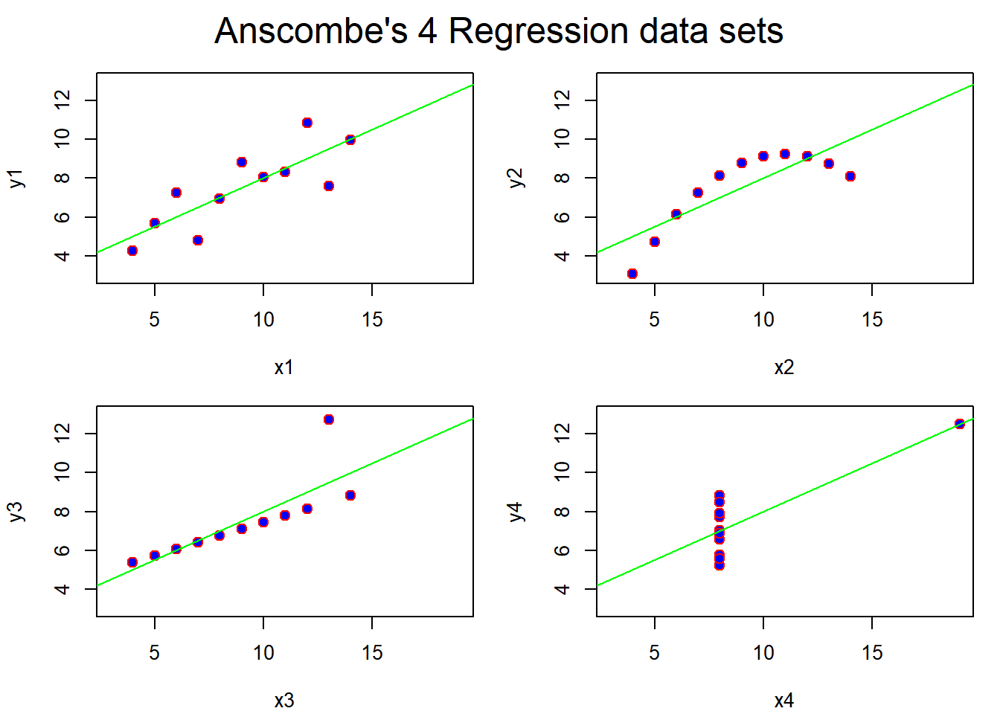
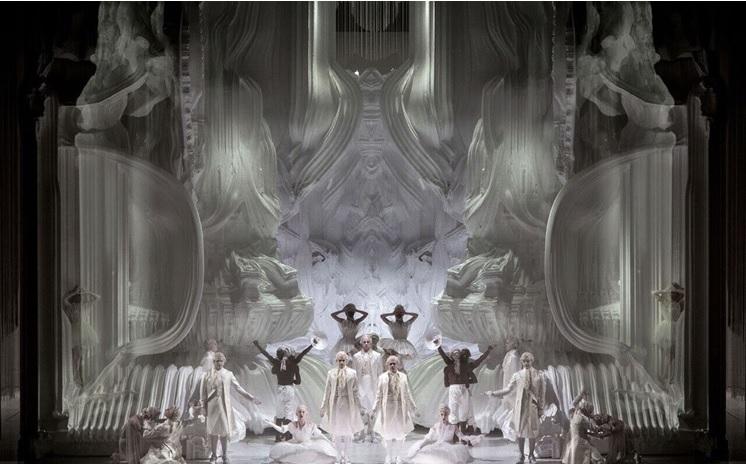
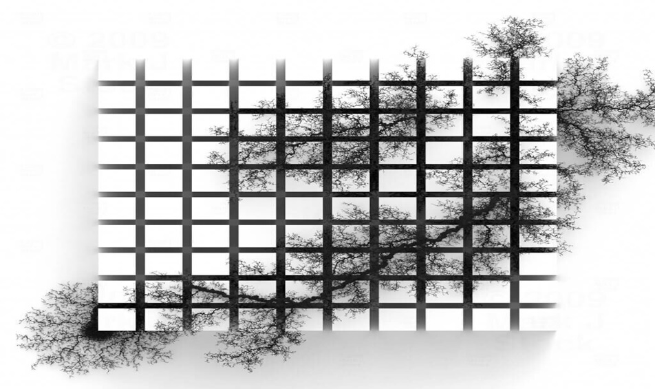
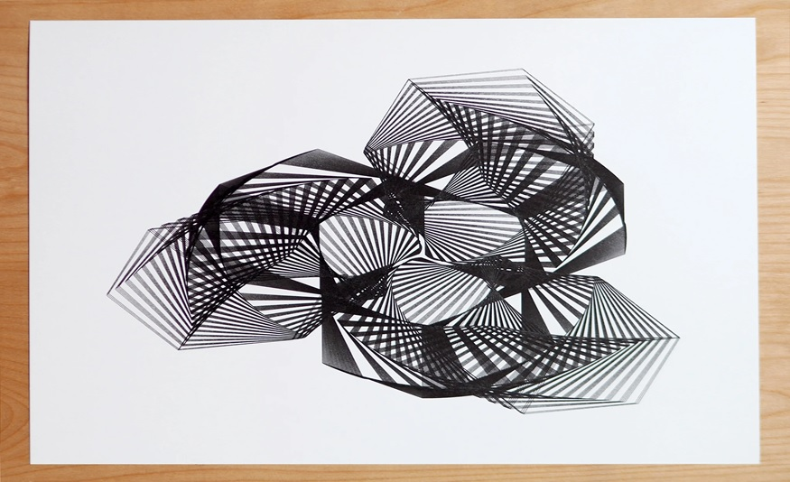
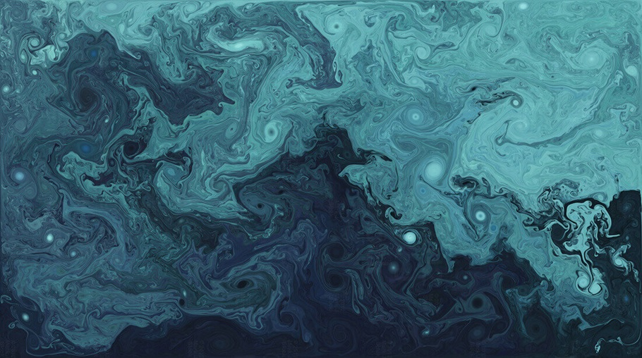
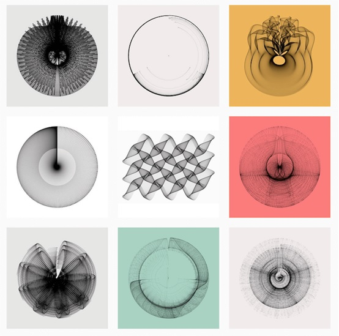
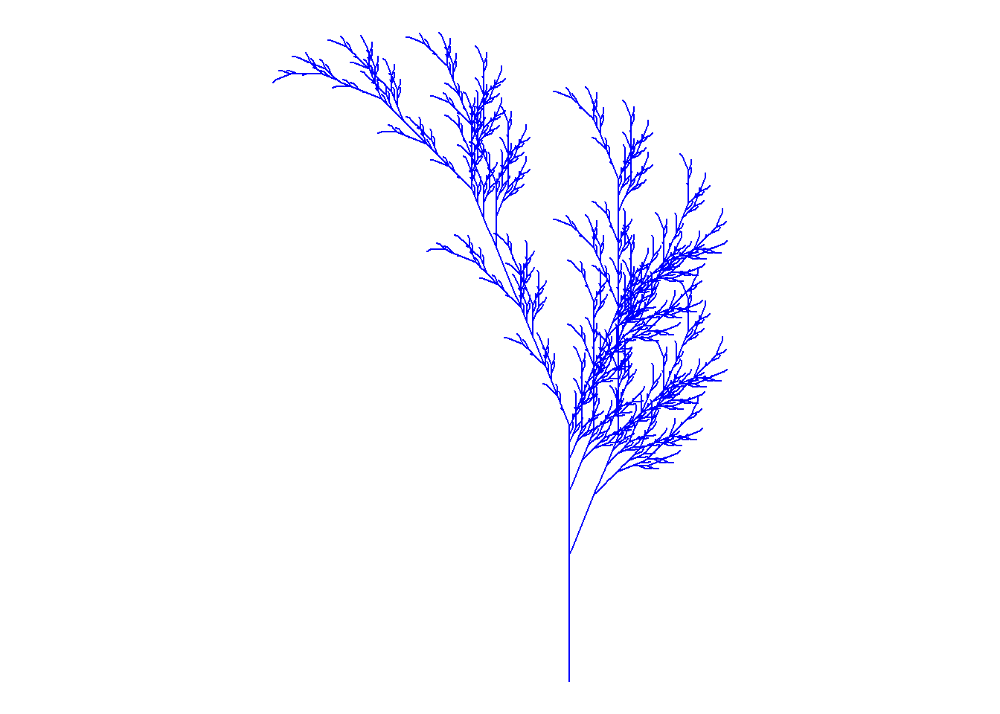

library(proto)library(gsubfn)library(tidyverse)data(anscombe) # Load Anscombe's data## Fancy version (per help file)ff <- y ~ xmods <-setNames(as.list(1:4), paste0("lm", 1:4))# Plot using for loopfor(i in1:4) { ff[2:3] <-lapply(paste0(c("y","x"), i), as.name)## or ff[[2]] <- as.name(paste0("y", i))## ff[[3]] <- as.name(paste0("x", i)) mods[[i]] <- lmi <-lm(ff, data = anscombe)# print(anova(lmi))}#sapply(mods, coef) # Note the use of this function#lapply(mods, function(fm) coef(summary(fm)))# Preparing for the plotsop <-par(mfrow =c(2, 2), mar =0.1+c(4,4,1,1), oma =c(0, 0, 2, 0))# Plot charts using for loopfor(i in1:4) { ff[2:3] <-lapply(paste0(c("y","x"), i), as.name)plot(ff, data = anscombe, col ="red", pch =21, bg ="blue", cex =1.2,xlim =c(3, 19), ylim =c(3, 13))abline(mods[[i]], col ="green")}mtext("Anscombe's 4 Regression data sets", outer =TRUE, cex =1.5)

Question 2: Generative Art
Generative Art is a form of art created using algorithms, computer programs, or systematic processes to generate artwork. It often involves the use of randomness, mathematical equations, and rules to produce unique and unpredictable visual or audio compositions.
Generative Art is a process of algorithmically generating new ideas, forms, shapes, colors or patterns. First, you create rules that provide boundaries for the creation process. Then a computer follows those rules to produce new works on your behalf.
Generative art is a versatile and constantly evolving field that pushes the boundaries of traditional art forms by leveraging the capabilities of computers and algorithms to create unique and dynamic visual experiences.
Some Examples of Generative Art:





Question 3: Fall.R with my color
Show Hidden Code
library(proto)library(gsubfn)library(tidyverse)# Define elements in plant art# Each image corresponds to a different axiom, rules, angle and depth# Leaf of Fallaxiom="X"rules=list("X"="F-[[X]+X]+F[+FX]-X", "F"="FF")angle=22.5depth=6for (i in1:depth) axiom=gsubfn(".", rules, axiom)actions=str_extract_all(axiom, "\\d*\\+|\\d*\\-|F|L|R|\\[|\\]|\\|") %>% unliststatus=data.frame(x=numeric(0), y=numeric(0), alfa=numeric(0))points=data.frame(x1 =0, y1 =0, x2 =NA, y2 =NA, alfa=90, depth=1)# Generating data# Note: may take a minute or twofor (action in actions){if (action=="F") { x=points[1, "x1"]+cos(points[1, "alfa"]*(pi/180)) y=points[1, "y1"]+sin(points[1, "alfa"]*(pi/180)) points[1,"x2"]=x points[1,"y2"]=ydata.frame(x1 = x, y1 = y, x2 =NA, y2 =NA,alfa=points[1, "alfa"],depth=points[1,"depth"]) %>%rbind(points)->points }if (action %in%c("+", "-")){ alfa=points[1, "alfa"] points[1, "alfa"]=eval(parse(text=paste0("alfa",action, angle))) }if(action=="["){data.frame(x=points[1, "x1"], y=points[1, "y1"], alfa=points[1, "alfa"]) %>%rbind(status) -> status points[1, "depth"]=points[1, "depth"]+1 }if(action=="]"){ depth=points[1, "depth"] points[-1,]->pointsdata.frame(x1=status[1, "x"], y1=status[1, "y"], x2=NA, y2=NA,alfa=status[1, "alfa"],depth=depth-1) %>%rbind(points) -> points status[-1,]->status }}ggplot() +geom_segment(aes(x = x1, y = y1, xend = x2, yend = y2),lineend ="round",color="blue", # Set your own Fall color?data=na.omit(points)) +coord_fixed(ratio =1) +theme_void() # No grid nor axes

Question 4: A critique on a chart by Nathan Yau’s example.
Chart Purpose - How LeBron James Outscored Kareem Abdul-Jabbar and All the N.B.A. Greats. The chart shows the comparison of Basketball players LeBron James and Kareem Abdul-Jabbar performance over a period of time. James taking the lead after starting at age 18 with 38,390 points.
Data Accuracy - The accuracy of the Data was provided to populated the remarkable events. The N.B.A. introduced the 3-pointer in the 1979-80 season, halfway through Abdul-Jabbar's career. For the next decade, the shot was considered a novelty, a "break glass in case of emergency" kind of heave. Abdul-Jabbar hit just one 3-pointer in his career. James is ninth in career 3-pointers after relying more on long-range shooting as he aged (it's usually easier on the body) and as 3-pointers soared in popularity.
Clarity and Simplicity - Simplicity is key to effective data visualization. The chart is easy to understand at first glance. Elements or distractions that may confuse the viewers were avoided. Use of Data Analytics with accurate data show the simplicity and accuracy of the data.
Visual Encoding - Use of graphical illustration was clearly seen of the perform of LeBron James compared with other great players over the years. The use of chart titles and labels to give information were shown.
Data Integrity - Any uncertainties or biases in the data can significantly impact the credibility of the chart. The accuracy and reliability of the data source and methodology used to create the chart were clearly shown. The accuracy and real data provided over a period without any alterations give a better understanding and accuracy of the chart.
Use of Color - Nathan Yau often discusses the use of color in data visualizations. The illustration of the chart with use of simple colors (blue, black and ashes) were clearly seen.
Storytelling - Effective data visualization often tells a story. The chart tells the story. No one thought LeBron James would overtake Kareem Abdul-Jabbar to become the N.B.A.'s career scoring leader when he came to the league as an 18-year-old. It didn't seem like anyone could. But James, with 38,390 points, has broken Abdul-Jabbar's record at 38 years old, an age long after most players are done scoring any points, much less the 30.2 points per game James is averaging this season.